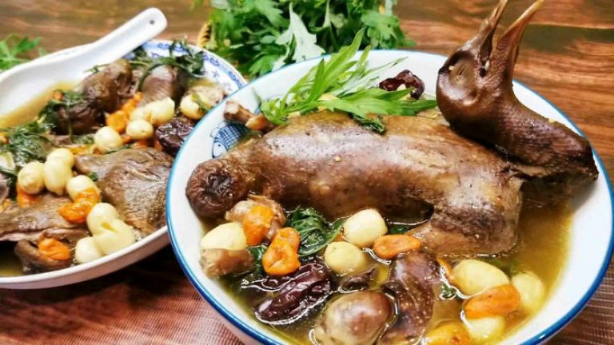
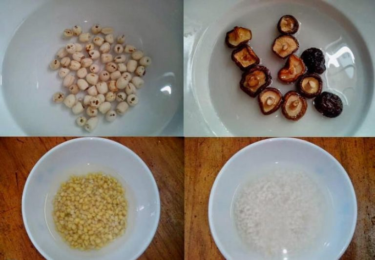
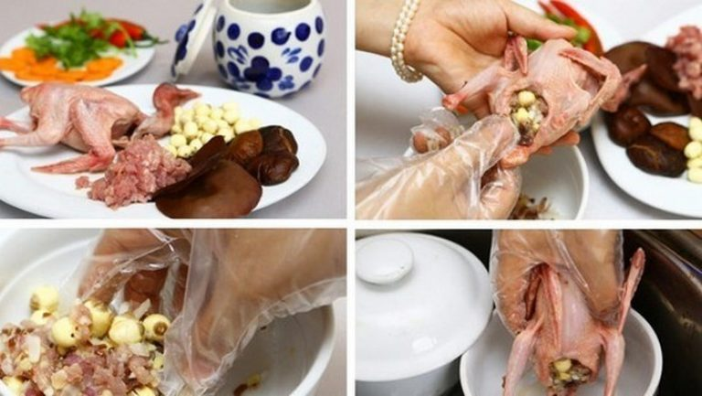
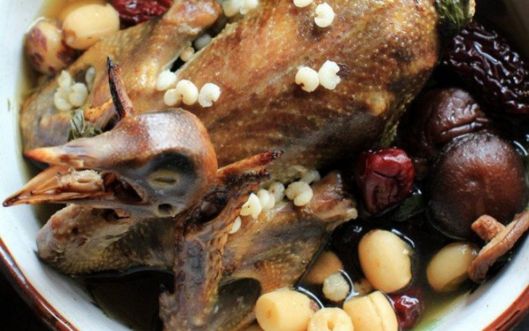

August 18, 2020 Thời gian :
Nguyên liệu cần chuẩn bị cho cách làm món bồ câu hầm thuốc bắc là gì?
Để có hương vị món bồ câu hầm thuốc bắc chuẩn hương vị và giàu dinh dưỡng. Khâu chuẩn bị nguyên liệu thực sự rất quan trọng. Đây là một trong những món ăn khá công phu về nguyên liệu. Mặc dù vậy, cách làm món bồ câu hầm thuốc bắc sẽ thực sự rất đáng để bạn chuẩn bị đấy!

– Chim bồ câu: 1 con.
– Hạt sen: khoảng 25-40 gram.
– Nấm hương.
– Một vài quả táo tàu khô.
– Kỳ tử, ý dĩ khoảng 10gram.
– Rượu trắng
– Gừng tươi
– Lá ngải cứu
– Gia vị thông thường: hạt nêm, mắm, muối, bột ngọt…
Trong quá trình chọn bồ câu, bạn nên lựa chọn con vừa, mới trưởng thành. Thịt bồ câu lúc này mềm, ngọt nước và không quá dai. Không nên chọn loại bồ câu non, đang thay lông bởi chúng thường ít thịt và khó làm sạch.
Chi tiết cách làm món bồ câu hầm thuốc bắc cho bạn tham khảo
Những ngày sức khỏe suy nhược hay bạn muốn chăm sóc người thân bị ốm. Vậy thì hãy thử ngay công thức bồ câu hầm thuốc bắc này nhé!
Bước 1: Tiến hành sơ chế thịt bồ câu
Bồ câu mua về còn sống bạn đem cắt tiết làm sạch lông, mổ bụng, loại bỏ hết nội tạng và rửa sạch. Sau đó, để phần da thịt bồ câu săn chắc lại có thể đem thui qua cùng một chút rơm. Tuy nhiên, nên lưu ý chỉ thui qua, không nên để lửa quá lớn hoặc quá lâu có thể làm bồ câu bị cháy.
Sau khi thui xong, bạn đem bồ câu ra cạo sơ qua lớp cháy bên ngoài và rửa lại với nước sạch.
Chuẩn bị sẵn một nồi nước lạnh và bỏ vào đó chút rượu trắng. Cho đến khi nước sôi thì bạn đem nhúng bồ câu vào trụng sơ. Nếu bạn thấy có bọt bẩn thì hãy dùng muỗng hớt bỏ.
Không có cảnh chen chúc, nhiều góc sống ảo, được mặc đồ đẹp lại thưởng thức đồ uống ngon và trò chuyện cùng với bạn bè thì quả thực là một trải nghiệm rất tuyệt đúng không nào? Theo dõi thêm nhiều bài mới của Food.com.vn để có thêm nhiều sự lựa chọn cho mùa Trung thu này nha.
Bước 2: Tiến hành sơ chế các nguyên liệu
Cách làm món bồ câu hầm thuốc bắc tiếp tục với công đoạn sơ chế các nguyên liệu khác. Bạn đem rau ngải cứu nhặt lấy phần non, bỏ đi phần già cứng hoặc có sâu. Với phần hạt sen, bạn cũng đem ngâm với nước ấm để hạt sen nở ra. Nấm hương đem ngâm vào nước ấm khoảng 15 phút. Trong thời gian chờ đợi tiếp tục làm sạch gừng và thái sợi nhỏ.
Bước 3: Cách làm món bồ câu hầm thuốc bắc
Ngải cứu sau khi nhặt đem rửa sạch thì bạn đem chúng thắt thành khúc khoảng 10cm và nhồi vào bụng chim bồ câu. Sau đó, để ngải cứu không bị rơi ra bạn có thể tăm nhọn ghim chặt phần bụng đã mổ.
Tiếp đó, bạn đem chim bồ câu ra đặt vào tô lớn. Trong tô, bạn để sẵn các nguyên liệu: hạt sen, ý dĩ, nấm hương, kỳ tử, táo tàu. Hoặc bạn cũng có thể bỏ các nguyên liệu này cùng vào bụng bồ câu với lá ngải.
Sau đó, bạn đổ khoảng 250ml nước và nêm nếm lại gia vị cho vừa ăn. Đem tô bồ câu hấp cách thủy và đậy vung kín. Sau khoảng chừng 30-40 phút thịt chim sẽ chín, lúc này bạn tắt bếp và đem ra.
Yêu cầu thành phẩm
Hương vịt thịt bồ câu ngọt thanh thấm đượm mùi thuốc bắc lại rất bổ dưỡng. Công thức bồ câu hầm thuốc bắc tốt nhất nên ăn khi còn nóng. Bạn có thể pha thêm một chút muối chấm để món ăn không quá nhạt.
Hi vọng rằng, với những hướng dẫn về công thức bồ câu hầm thuốc bắc trên bạn có thể áp dụng và thực hiện tại nhà. Mặc dù có sự chuẩn bị công phu. Tuy nhiên kỳ thực món ăn này không quá khó thực hiện. Hãy thử làm món ăn này để chăm sóc sức khỏe cho mình và người thân trong gia đình nhé!